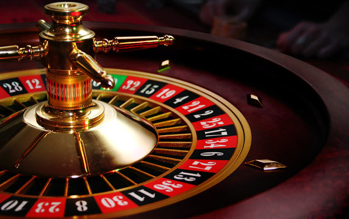

Najpopularniejsze gry stołowe w kasynach
Kasyna oferują szeroki wybór gier karcianych i ruletki, które wymagają nie tylko szczęścia, ale i strategii.
- Poker – gra strategiczna, w której liczy się umiejętność blefowania.
- Blackjack – gra karciana, w której celem jest uzyskanie 21 punktów.
- Ruletka – klasyczna gra losowa z obracającym się kołem.
- Baccarat – popularna wśród graczy high-roller.
